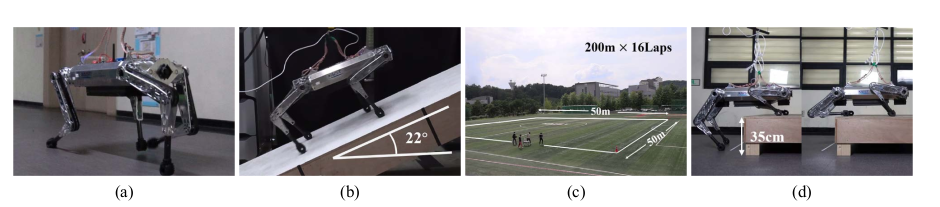

IEEE International Conference on Robotics and Automation (ICRA), 2022
Young-Ha Shin (1) Seungwoo Hong (1) Sangyoung Woo (1) JongHun Choe (1) Harim Son (1) Gijeong Kim (1) Joon-Ha Kim (1) KangKyu Lee (1) Jemin Hwangbo (1) Hae-won Park (1)
(1) Korea Advanced Institute of Science and Technology

Abstract
This paper introduces a design method for an
efficient and agile quadruped robot. A mixed-integer opti-
mization formulation including the number of gear teeth is
derived to obtain the optimal gear ratio that minimizes cost
for a running-trot with the target speed of 3 m/s. With
the inclusion of integer constraints related to the number of
gear teeth, detailed design considerations of gear trains can
be included in the optimization process. Thermal dissipation
of the motor controller is also taken into account in the
optimization to consider heat generation during high-speed
running. KAIST Hound, a 45 kg robot, designed with the
obtained design parameters has successfully demonstrated a 3
m/s running-trot using a nonlinear model predictive controller
(NMPC). Furthermore, the robot has proved its robustness by
the demonstration of additional experiments such as 22 ◦ slope
climbing, 3.2 km walking, and traversing a 35 cm obstacle.
@INPROCEEDINGS{HOUNDShin2022,
author={Shin, Young-Ha and Hong, Seungwoo and Woo, Sangyoung and Choe, JongHun and Son, Harim and Kim, Gijeong and Kim, Joon-Ha and Lee, KangKyu and Hwangbo, Jemin and Park, Hae-Won},
booktitle={2022 International Conference on Robotics and Automation (ICRA)},
title={Design of KAIST HOUND, a Quadruped Robot Platform for Fast and Efficient Locomotion with Mixed-Integer Nonlinear Optimization of a Gear Train},
year={2022},
volume={},
number={},
pages={6614-6620},
doi={10.1109/ICRA46639.2022.9811755}
}